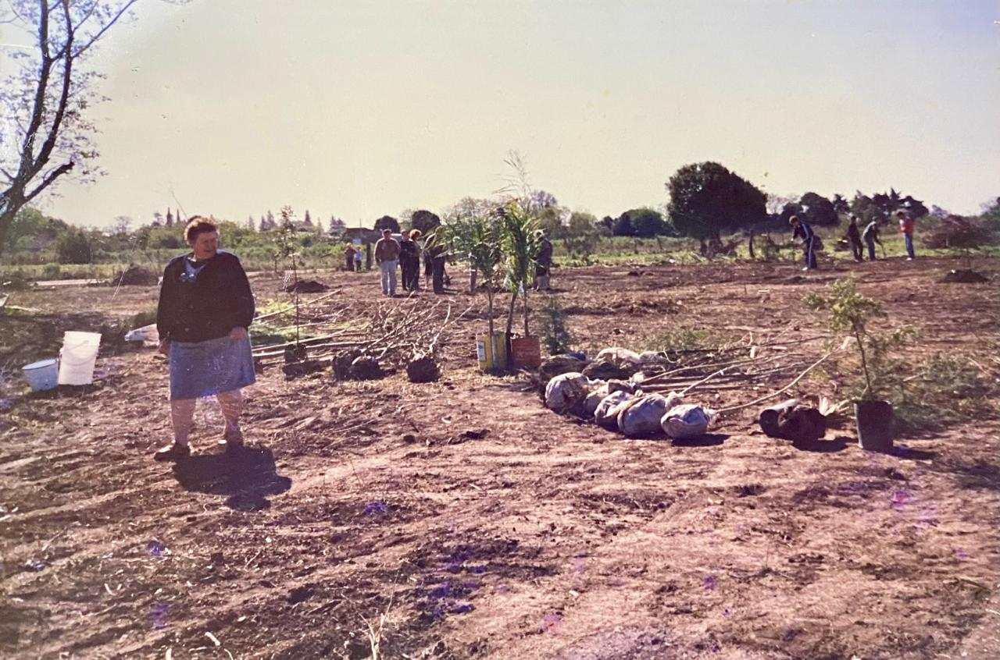
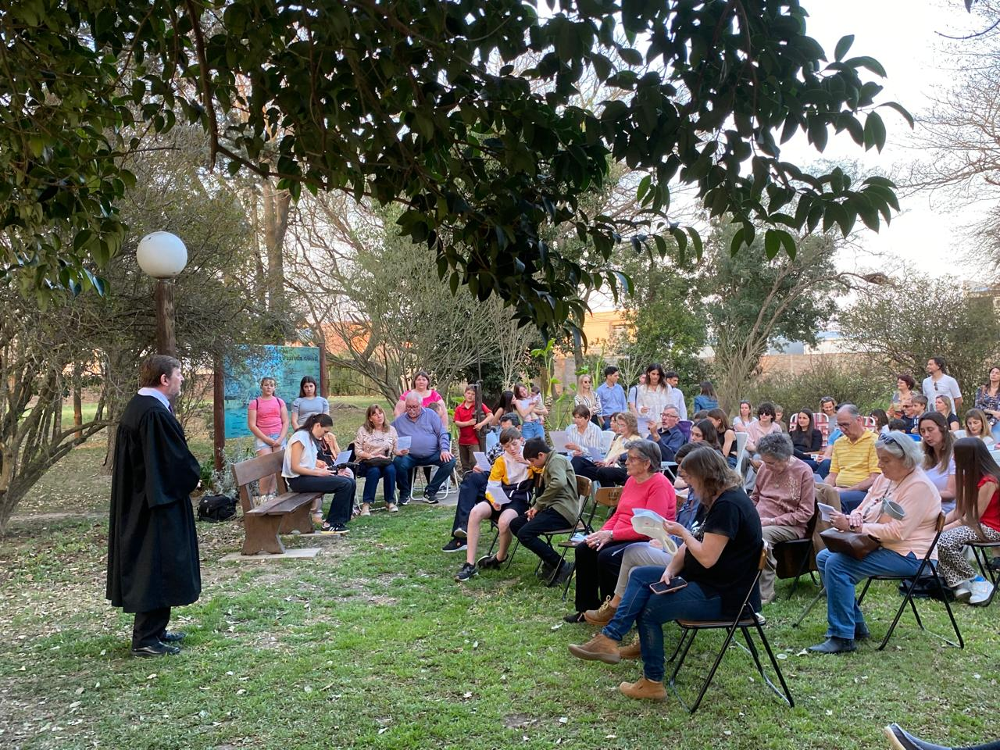
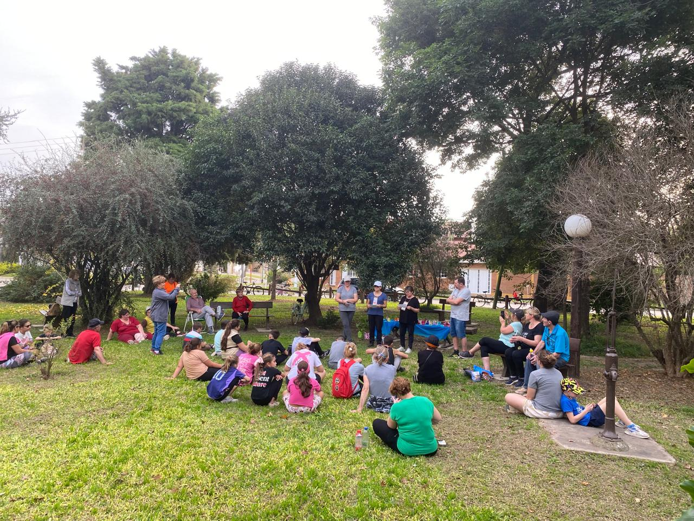

Dios puso al hombre en el jardín para que lo cuidara y lo cultivara" (Génesis 2).

El 1 de septiembre de 1990 se llevó a cabo una significativa plantación de árboles, en la que se sembraron un total de cuarenta ejemplares pertenecientes a diversas especies. Esta actividad formó parte de una iniciativa colectiva en la que participaron varias familias de la comunidad. Cada una de ellas tuvo la oportunidad de plantar un árbol, aportando así al crecimiento y embellecimiento del entorno natural. La jornada no solo fue un acto simbólico de compromiso con el medio ambiente, sino también una ocasión para fortalecer los lazos comunitarios y fomentar el respeto por la naturaleza entre los participantes. Cabe destacar que el lote donde se realizó esta plantación fue donado generosamente por el Sr. Bernardo Brechbulh, cuyo valioso aporte hizo posible la creación de este espacio verde comunitario.
El primer árbol plantado el 1 de septiembre de 1990 marcó el inicio de una jornada memorable en la que la comunidad se unió con un propósito común: contribuir al cuidado del medio ambiente. Este acto inaugural no solo representó el comienzo de la plantación de cuarenta árboles, sino que también simbolizó el compromiso colectivo con la naturaleza y el deseo de transformar el entorno en un espacio más verde y armonioso. Al ser sembrado por una de las familias participantes, el primer árbol se convirtió en un emblema de unidad, esperanza y responsabilidad compartida.


En el parque se han realizado celebraciones del culto. Estas ceremonias, organizadas por la Iglesia Evangelica, han reunido a fieles de todas las edades en un ambiente de recogimiento y espiritualidad. Bajo los árboles y al aire libre, se han llevado a cabo misas, cánticos y momentos de oración, fomentando la unión entre los participantes y resaltando el valor del espacio público como lugar de encuentro y expresión de la fe.
Tambien, en diversas ocasiones, ha sido el lugar elegido para iniciar y culminar bicicleteadas organizadas por la comunidad. Bajo la sombra de los árboles y en un entorno natural, ciclistas de todas las edades se han reunido para compartir su pasión por el deporte, fomentar hábitos saludables y fortalecer los lazos sociales. Estas actividades no solo promueven el ejercicio físico, sino que también destacan el valor del espacio público como escenario de integración y vida comunitaria.
